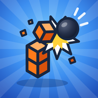

Welcome to the Tower Smash 3D test
Thanks for helping! Tower Smash is a phone game where you build towers out of blocks and smash them with real physics. This is an early test build — things will break, and that's exactly what we want to hear about.
Play Tower SmashPut it on your home screen
iPhone (Safari): open the game, tap the Share button, then Add to Home Screen.
Android (Chrome): open the game, tap the ⋮ menu, then Add to Home screen or Install app.
It then opens full screen like an app and works offline.
What to try this week (about 15 minutes)
- Open it fresh and go through the intro and the Training Yard without help.
- Play three campaign levels.
- In Free play, build something with the Line or Walls tool, then fuse it with Weld.
- Try five different weapons — the Explosive and Exotic ones are the fun ones.
- Send a Duel to a friend (Home › Duels).
- Use the AI Architect once (Build › + Add › Create).
- Send one piece of feedback, even if it's "all good".
How to send feedback
In the game, open the menu (top left) › Send feedback, or Home › Feedback. Pick Bug, Idea or Felt off and write what happened. You can send it on GitHub, or share it by text or email to the person who invited you. The version and your device type are added automatically.
Privacy
Your progress stays on your phone. There are no accounts, ads or tracking. The AI Architect sends what you type (or the photo you pick) to Claude to design the build. Feedback sends only what you choose to send.